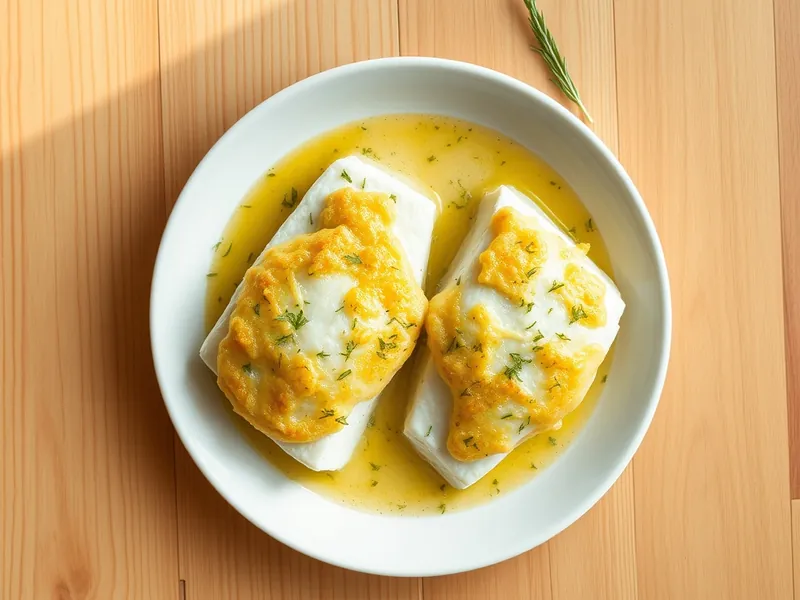

Фото: Иллюстрация ИИ, Cloudflare Workers AI
Треска в сырной корочке в духовке
Филе трески под шапкой из сыра, сметаны и чеснока
25 мин3 порц.283 ккал на порциюБ 37 · Ж 14 · У 1Русская кухня
Продукты на 3 порц.
- Треска500 г
- Сыр твёрдый80 г
- Сметана 20%2 ст. л.
- Чеснок1 зуб.
- Укроп по желаниюпо вкусу
- Растительное масло1 ч. л.
- Соль2 щеп.
- Перец чёрный молотый2 щеп.
Как готовить
- Разогрейте духовку до 200 °C (сильный жар) и смажьте форму маслом.
- Нарежьте треску порциями, посолите, поперчите и уложите в форму.
- Смешайте тёртый сыр, сметану, давленый чеснок и рубленый укроп.
- Распределите сырную массу поверх рыбы ровным слоем.
- Запекайте при 200 °C (сильный жар) 15-18 минут, пока корочка не зарумянится, а рыба не будет легко расслаиваться вилкой.
Совет. Сырная шапка не даёт рыбе пересохнуть. Вместо трески подойдут минтай или хек.